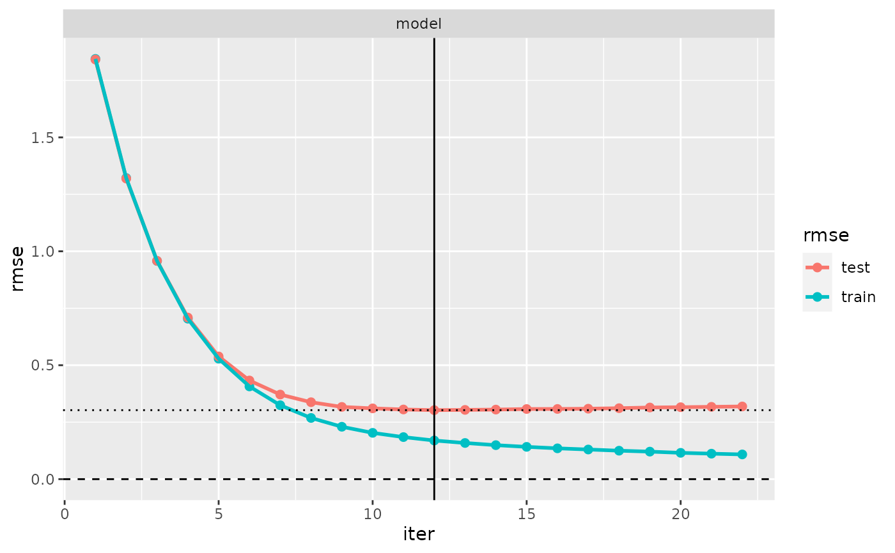

formula-based wrapper for xgb.train()
fm_xgb.Rdfm_xgb() is a convenience wrapper for tree boosting with
xgb.train() (from package xgboost)
that fits into the modeltuner framework.
The model is specified by the arguments formula and data.
The resulting models belong to the class of so-called iteratively fitted models,
see ifm and vignette("ifm") for information.
Usage
fm_xgb(
formula,
data,
nrounds = 100,
early_stopping_rounds = 10,
weights = NULL,
na.action = na.pass,
verbose = interactive(),
monotone_constraints = 0,
interaction_constraints = NULL,
obj = NULL,
feval = NULL,
maximize = FALSE,
pref_iter = NULL,
keep_x = TRUE,
...
)
# S3 method for fm_xgb
print(x, abbreviate = TRUE, ...)
# S3 method for fm_xgb
predict(object, newdata, pref_iter = object$pref_iter, ...)
extract_booster(object)Arguments
- formula
A
formula.- data
A
data.frame.- nrounds, early_stopping_rounds, obj, feval, maximize
Passed to
xgb.train(but note that some default values are different).- weights
Fitting weights.
- na.action
A function which indicates what should happen when the data contain
NAs.na.passis the default,na.omit,na.excludeorna.failcould be meaningful alternative settings.- verbose
Logical: Whether to print information on progress to console.
- monotone_constraints
Named vector with values in
c(-1, 0, 1). Names identify features,1means increasing,-1decreasing and0no constraint. Features not appearing will be assigned a0in the call toxgb.train(). Default is no constraints.- interaction_constraints
List of named character vectors defining interaction constraints. Default is no constraints.
- pref_iter
An integer, the preferred iteration. This is the iteration that is used by default when predictions from the model are computed with
predict(). Ifpref_iter=NULL, the last iteration will be used. Seeifmandvignette("ifm")for information on the concepts of iteratively fitted models and preferred iterations. The preferred iteration of a model can be changed without re-fitting the model, seeset_pref_iter().- keep_x
Logical: Whether to keep the model matrix
xas a component of the return value.- ...
Passed to
paramsinxgb.train().- x, object
Object of class “fm_xgb”.
- abbreviate
Logical. If
TRUE(the default), long formulas and calls are printed in abbreviated mode, such that they usually fit on 4 or fewer output lines; otherwise they are printed entirely, no matter how long they are.- newdata
Data for prediction.
Value
fm_xgb() returns a list of class “fm_xgb” with components
booster: the xgboost booster, of class “xgb.Booster”;
formula: the formula;
x: the model matrix (resulting from the
formulausingmodel.matrix());weights: the fitting weights;
xlevels: list of the levels of the factors included in the model;
pref_iter: the preferred iteration, an integer (see argument
pref_iter);na.action: the
na.actionused during data preparation;contrasts: the
contrastsused during data preparation;call: the matched call generating the model.
extract_booster() returns the booster, of class “xgb.Booster”.
Details
Not all parameters of xgb.train() are available in fm_xgb().
In particular, those related to console output (verbose, print_every_n),
those related to saving the result (save_period, save_name) and callbacks
won't be passed to xgb.train().
The parameters x and y to be passed to xgb.train() are extracted from
formula and data by means of model.frame, model.matrix
and model.response.
Features of cross-validation of models generated with fm_xgb():
The model class “fm_xgb” belongs to the class of so-called iteratively fitted models; see ifm and
vifnette("ifm")for information on the peculiarities of cross-validating such models. In particular, note the role of the parameteriterincv().When
cv()is executed withkeep_fits=TRUE, the fitted models from cross-validation that are stored in the result (and returned byextract_fits()) will not be of class “fm_xgb”, but of class “xgb.Booster”,
Default metric:
Currently, xgboost models generated with fm_xgb() are the only models not having the default choice
of its metric, rmse for continuous response and logLoss in the binary case.
Each xgboost model has an eval_metric.
If not specified explicitly by the user, this metric is automatically chosen depending on the objective
in the call to xgb.train() or fm_xgb().
In modeltuner, when cv() is applied, the eval_metric is taken as the default metric
of the resulting "cv" object.
(see default_metric()).
extract_booster() returns the booster, an object of class “xgb.Booster”,
as returned by xgb.train().
See also
xgb.train, xgb.cv (package xgboost);
ifm and vignette("ifm"); default_metric;
fit.model_fm_xgb; set_pref_iter
Examples
# mtcars data
xgb_cars <- fm_xgb(mpg ~ ., mtcars)
# predict
predict(xgb_cars, newdata = head(mtcars))
#> Mazda RX4 Mazda RX4 Wag Datsun 710 Hornet 4 Drive
#> 21.00058 20.99997 22.79976 21.39912
#> Hornet Sportabout Valiant
#> 18.70015 18.10004
# iris data
xgb_iris <- fm_xgb(Sepal.Width ~ ., iris)
# cross-validate
cv(xgb_iris)
#> --- A “cv” object containing 1 validated model ---
#>
#> Validation procedure: Complete k-fold Cross-Validation
#> Number of obs in data: 150
#> Number of test sets: 10
#> Size of test sets: 15
#> Size of training sets: 135
#>
#> Model:
#>
#> ‘model’:
#> model class: fm_xgb
#> formula: Sepal.Width ~ Sepal.Length + Petal.Length + Petal.Width +
#> Species - 1
#> metric: rmse
#>
#> Preferred iterations:
#> model ‘model’: min (iter=12)
# Plot evaluation log
plot(evaluation_log(last_cv()))
